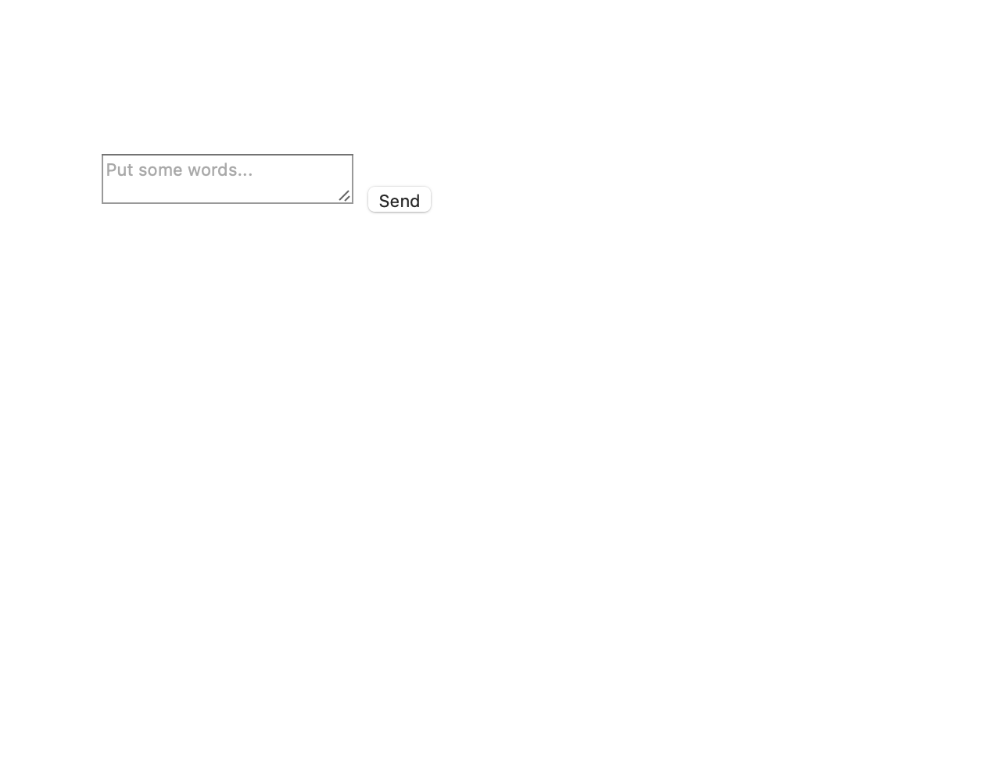
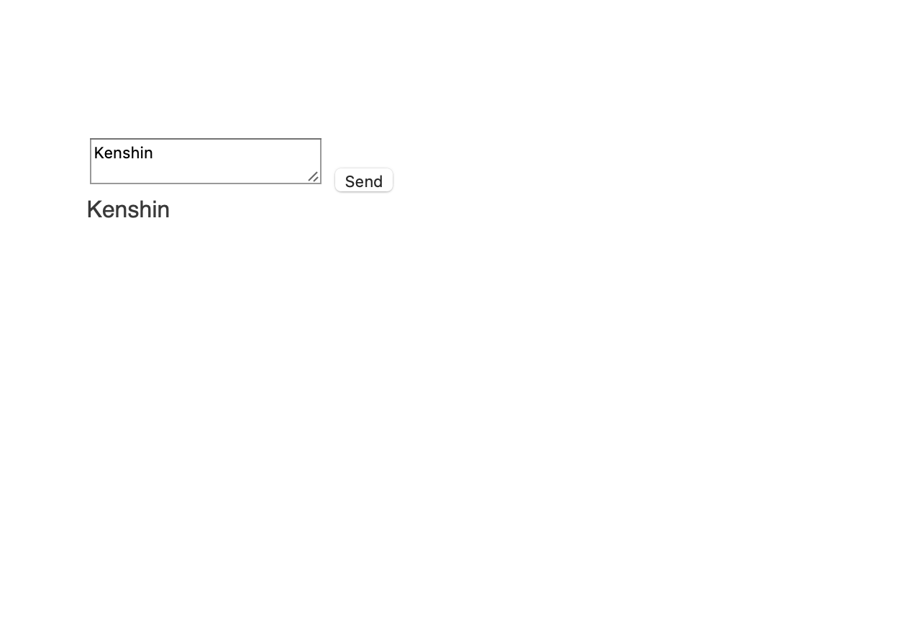
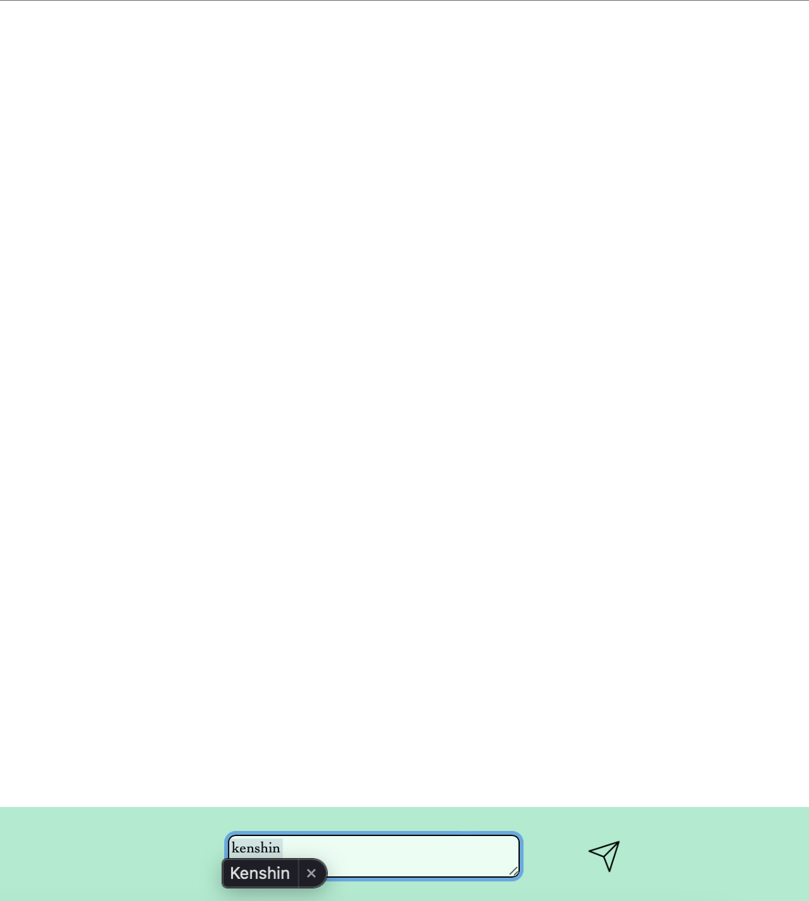
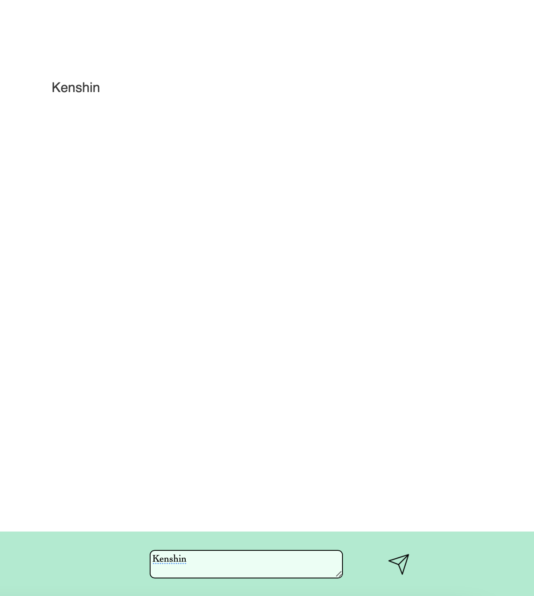

Hello!
・ajaxとは非同期通信のこと。
・非同期通信とはページ遷移なしで更新できるもの。
・つまりajaxを使うことで、チャットのように自動で新しいものを表示できるようになる。
・まずMAMPを開いて、右上のスタートボタンを押します。

・htdocsに新たに、exam.phpとconnect.phpを作成してください。
・exam.phpとconnect.phpを開いてください。
・まずはフォームを作ります。
・フォームとは、アカウント登録をするときに名前などを入力するものです。
<form id="my_form">
<textarea id='text' name="text" placeholder="Put some words..."></textarea>
<button type="button" onclick="file_upload()">Send</button>
</form>
<div id='result'></div>
・formのidをmy_formとする。
・テキストとボタンを作成する。
・ボタンのオンクリックでfile_uploadという関数を指定する。
・表示先に使用するためにdivを作成する。
・これで写真のようなフォームが作れたと思います。

・確認方法は、http://localhost/exam.phpでできると思います。
・先程ボタンのオンクリックで書いた、file_uploadという関数の中にajaxを書いていきます。
・まずは関数と先程のデータの受け取りを行います。
<script>
function file_upload()
{
var formdata = new FormData($('#my_form').get(0));
・次にajaxの細かい設定を行います。
$.ajax({
url : "connect.php",
type : "POST",
data : formdata,
cache : false,
contentType : false,
processData : false,
dataType : "html"
})
・urlで処理を行いたい先のファイルを指定する。
・先程変数に入れたデータをdataで受け取る。
・次に、成功した場合、失敗した場合の処理を書きます。
.done(function(data, textStatus, jqXHR){
$("#result").html(data);
})
.fail(function(jqXHR, textStatus, errorThrown){
alert("fail");
});
}
</script>
・成功した場合は、先程作成したdivのresultにデータを入れます。
・最後にスクリプトを締めて終了。
・データを受け取って処理するphpの内容を書きます。
・これは簡単です。
<?php
$text = $_POST['text'];
print($text.'<br>');
?>
・フォームのテキストの名前を引数に指定してデータを受け取る。
・それをプリントで表示する。
・これであとは、テキストに文字を入力し送信ボタンを押すだけです。

・このように表示されたら成功です。
・http://localhost/exam.phpをみて確認してください。
・最後に私がデザインしたフォームで試してみたいと思います。

・書き込んで送信を押すと、

・しっかりと表示されました。
・このフォームで使った送信ボタンに変更する方法は こちら で載せています。
Fin.